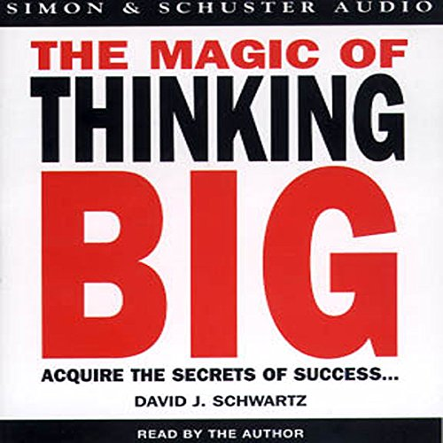

Library › Self-Improvement
The Magic of Thinking Big — Summary & Key Lessons

The 1959 classic: success is determined not by the size of your brain but by the size of your thinking.
📖 OPEN THE FULL INTERACTIVE BREAKDOWN →🌐 Read it in Hindi, Hinglish, Gujarati, Tamil & 22 more languages — free, with audio.
💡 The Big Idea
Schwartz, a Georgia State professor who studied thousands of executives, found the gap between the successful and the mediocre wasn't intelligence, education, or luck — it was the scale of their thinking. Belief triggers the mind to find ways; disbelief triggers it to find excuses. The book is a field manual: cure 'excusitis' (the failure disease in its health, intelligence, age, and luck strains), build confidence through action (action cures fear), think and dream creatively, make your attitudes your allies, turn defeat into victory, and use goals to grow. Written in 1959, it remains the most practical 'mindset' book ever — every principle paired with a how-to-do-it drill.
🧠 The 5 Key Lessons
Lesson 1: Believe You Can Succeed — and You Will
Chapter 1: Believe You Can Succeed and You Will
Belief is not wishful thinking — it's the mental switch that determines HOW your mind works: believe something can be done, and your mind manufactures methods, means, and shortcuts; believe it's impossible, and the same mind diligently manufactures proofs that you're right to quit. Everyone wants success, but most people don't BELIEVE they can have it, so they drift — and the size of the belief sets the size of the result ('big thinkers get big results; little thinkers get little results'). Schwartz's three-step starter: think success, never failure (in every situation, default to 'I'll win'); remind yourself regularly that you're better than you think you are (successful people are not supermen); and believe big — set your goals a size up, because people are paid in proportion to the size of the problems they solve.
📖 Example: Schwartz's seminar story: a sales rep earning $10,000 asked how a colleague of equal talent earned five times more. The answer emerged from the man's own analysis — the five-figure man simply believed he was a five-figure man: he expected bigger clients,… Read the full example →
⚡ Do this: Upgrade one goal by one size this week: the client you 'can't' land, the salary you 'can't' ask, the audience you 'can't' reach. Then instruct your mind properly: write three ways it COULD be done before allowing one reason it can't.
Lesson 2: Vaccinate Yourself Against Excusitis
Chapter 2: Cure Yourself of Excusitis, the Failure Disease
Study unsuccessful people and you find a shared illness: EXCUSITIS — the habit of explaining away mediocrity, worsening with each use until it becomes the personality. The four strains: HEALTH excusitis ('my condition limits me' — yet countless thriving people carry worse conditions; talking about ailments feeds them); INTELLIGENCE excusitis ('I lack brains' — the universally underrated truth is that interest and stickability beat IQ: 'the thinking that guides your intelligence is much more important than how much you have'); AGE excusitis ('too old/too young' — productive years are longer than anyone pretends; the 40-year-old 'too old to start' has decades of prime output left); and LUCK excusitis ('they got the breaks' — attributing others' wins to luck excuses studying HOW they won). Every strain has the same cure: catch the excuse mid-sentence and refuse to say it.
📖 Example: Schwartz's gallery: the executive missing an arm who out-golfed him ('I've learned it's attitude, not the arm, that swings the club'); his friend who failed the Air Force entry exams, then — told he lacked the brains for engineering — earned the degree… Read the full example →
⚡ Do this: Identify your dominant strain (health, brains, age, or luck) and run a 7-day fast: zero mentions of it, spoken or internal. Each time it surfaces, replace it with one action a person WITHOUT that excuse would take today.
Lesson 3: Action Cures Fear — Build Confidence by Doing
Chapters 3, 5: Build Confidence and Destroy Fear / How to Think and Dream Creatively
Fear is not bred by heredity but by inaction — and it dies by the same law in reverse: ACTION CURES FEAR. Isolate the fear, determine the appropriate action, and take it immediately; hesitation only fertilizes the fear (the salesman who delays the call finds it harder each minute). Confidence, likewise, is built mechanically, not mystically — Schwartz's five confidence drills: sit up front (in every meeting and gathering — back rows are where confidence goes to hide), make eye contact, walk 25% faster (bearing changes the mind that carries it), speak up (every silent meeting attendance is a small vote for your own insignificance), and smile big. Meanwhile deposit only positive thoughts in your memory bank before sleep, and withdraw only positive ones — recalling old humiliations before a big event is asking your own mind to sabotage you.
📖 Example: The book's psychology-of-the-body cases: Schwartz coached a terrified young salesman not with pep talks but with prescriptions — front-row seating at sales meetings, forced comments at every session, a faster walk between calls. Within months the man's… Read the full example →
⚡ Do this: Run all five drills for two weeks: front seat, eye contact, 25% faster walk, one voluntary comment per meeting, bigger smile. And install the deposit rule tonight — last five minutes before sleep are for wins only.
Lesson 4: Think Big: Language, Vision, and the Long View
Chapters 4, 6: You Are What You Think You Are / Manage Your Environment
People size you up by how you size yourself up: think your work is unimportant and you'll perform it accordingly — and be treated accordingly. The upgrade toolkit: use big, positive, cheerful language (words are thought-fuel; 'it's a setback, we'll fix it' produces different chemistry than 'we're ruined'); practice adding value ('look at things not as they are, but as they CAN be' — the vacant lot seen as a shopping center); see the best in people (including yourself — write your own 'sell-yourself-to-yourself' commercial and read it daily); and think above trivia (big thinkers ignore petty slights and small-change arguments; every hour spent on trivialities is stolen from the main project). Environment management is the force multiplier: go first class in the people you associate with — the chronic 'you can't do it' crowd is contagious, and so is the 'how can we do it?' crowd.
📖 Example: Schwartz's job-title experiment: two men doing identical work — one describes himself as 'just a clerk pushing papers,' the other as 'helping the company serve its customers by keeping information flowing.' Five years later the second man is management; the… Read the full example →
⚡ Do this: Write your 60-second self-commercial (who you are at your best, what you deliver) and read it every morning for 30 days. Simultaneously audit your five closest voices: schedule more time with the biggest thinker, less with the loudest cynic.
Lesson 5: Turn Defeat Into Victory & Put Goals to Work
Chapters 11–13: Turn Defeat Into Victory / Use Goals to Help You Grow / Think Like a Leader
The difference between success and failure isn't the presence of setbacks — everyone gets flattened — it's the response protocol: study your own setbacks like an impartial engineer (salvage the lesson, discard the self-blame), be constructively self-critical without becoming self-destructive, remember that blaming luck never moved anyone forward, and combine persistence WITH experimentation — staying power plus new angles beats bull-headed repetition of the failed approach. Then aim the machinery: a goal is more than a dream, it's 'a dream acted upon' — build your ten-year plan in three departments (work, home, social), let the goal absorb you until it automatically filters decisions, take one step at a time (the next mile, not the whole map), and treat detours as route changes, not destination changes. Growth comes from goals; without a destination, even great engines idle.
📖 Example: Schwartz's favorite defeat-alchemy case: a young executive fired from a plum job who spent a bitter month blaming politics — then forced himself to write the impartial engineer's report on his own performance. The report found real deficiencies (he'd… Read the full example →
⚡ Do this: Write your impartial engineer's report on your last significant failure: three factual causes, zero adjectives, one fix per cause. Then draft the ten-year plan across work, home, and social — and extract from it the single next-30-days step in each department.
✅ 5-Step Action Plan
- Upsize one goal now; list three ways it CAN be done before any can'ts.
- Seven-day fast from your favorite excuse strain.
- Run the five confidence drills daily; deposit only wins at bedtime.
- Read your self-commercial each morning; upgrade your five closest voices.
- File the engineer's report on your last defeat; write the ten-year, three-department plan.
💬 Best Quotes from The Magic of Thinking Big
- “Believe it can be done. When you believe something can be done, really believe, your mind will find the ways to do it.”
- “Action cures fear. Indecision, postponement, on the other hand, fertilize fear.”
- “The thinking that guides your intelligence is much more important than how much intelligence you have.”
Interactive version: mark lessons as read, listen in your language, share quote cards.